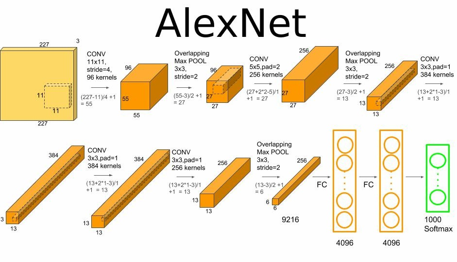
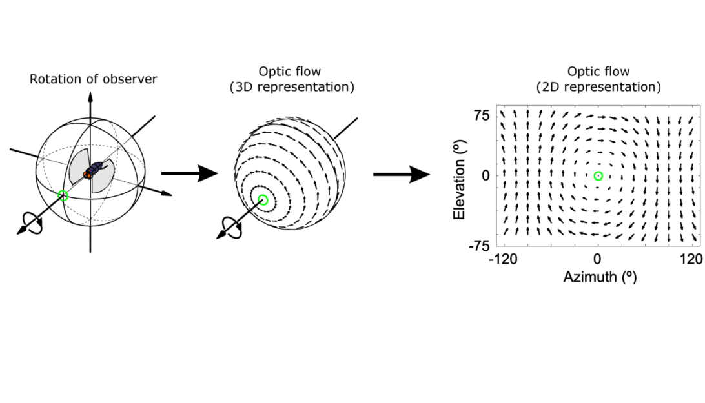

I worked on several WebGL projects using ThreeJS and GLSL in which I explored various fundamental computer graphics subjects. These projects spanned across a wide variety of real-world uses and required a deep understanding of the real time computer graphics rendering pipeline.
The first project project deals with vertex shader programming.
The second project involves animation using various matrix transformations on objects in hierarchical structures.
The third project is a pool game, it implements collision detection and involves fragment shader programming with various local illumination models implemented on a variety of materials.
About me
I am a Canadian software developer living in Quebec, specializing in Computer Graphics, using technologies such as OpenGL, WebGL, GLSL, LibiGL, Skia and more. I program mainly in C++ and Python, but I am also familiar with Javascript, HTML/CSS, C#, Assembly and bash scripting in UNIX. I also have knowledge in the field of Artificial Intelligence, mainly in Computer Vision using OpenCV and PyTorch.
In my spare time, I am a visual artist you can see some of my work here.
Procedural Planet
 ×
×
Inspired by Space Engine’s planet generation, I worked on a large project to research and I wrote an article about the procedural generation of planets. In this project, I wrote a pure fragment shader in GLSL that generates a planet using a variety of techniques such as multi-layered noise functions, color mapping, bump mapping and local illumination. In the end, I have a total of nine global variables a user can manipulate to shape the planet to their liking.
Check out the project here, or read the article I wrote here.
Check out the project here, or read the article I wrote here.


Image classification using a convolutional neural network


×
This is a Computer Vision project programmed in Python to recognize and classify certain animals in their respective category, using Torchvision's Convolutional Neural Networks and PyTorch. Includes small statistical studies of different machine learning methods.
Source code here.
Source code here.
Rendering and Shader Programming Projects

WebGL projects
A collection of WebGL projects programmed in ThreeJS and GLSL

Procedural Planet
A large project with an article I wrote

Raytracer
Classic Raytracer in C++
Computational Geometry Projects
Subdivision algorithms
Implementation of Loop, Sqrt3 and Butterfly subdivisions from scratch
Laplacian and curvature calculation
Algorithms using the Laplacian of surfaces, calculated from scratch

ARAP implementation
An implementation of the 2007 ARAP surface modeling paper
Artificial Intelligence Projects
Autonomous Driving with Duckietown
Member of a team of graduate students for the development of an autonomous vehicle

Real Time Optical Flow
Visualization of the direction of motion all in real time

Image classification
Image classification using Convolutional Neural Networks (CNN) in PyTorch
Seminars on Computer Graphics Papers
The following are slides I made for the computer graphics seminars I gave to fellow graduate students. Each seminar was about an interesting Computer Graphics scientific paper. Naturally, these seminars required me to have a deep understanding of the paper I presented. For some papers, I would go as far as to reproduce their methods.

Work
2022-2023
C++ graphics R&D developer - Corel Corporation
Employed to work on the CorelDraw graphics suite. I was tasked with developing typography technology with the Skia graphics engine and WebAssembly. It required understanding of vector graphics, language encoding, font encoding and glyph rendering.
2021
Python developer for chemical analysis devices - Aquassist, Magnus Produits Chimiques
Internship of 4 months in Magnus’s research and development branch : Aquassist. I was employed to develop innovative portable chemical analysis devices. I worked with AWS and a multitude of Python libraries including Numpy, Pandas, Boto3, Dash and BluePy
2020-2021
AI Developer for a conversational agent in Unity - National Research Council Canada (NRC)
Employed by the NRC to develop a conversational AI simulating varying personalities for research purposes in the criminology field.
Education
2022-2024
Masters of Computer Science (Computer Graphics)
Masters of Computer Science (Computer Graphics)
University of Montreal
Graduated with Cum Laude distinction
2019-2022
Bachelor of Computer Science
University of Montreal
Graduated with Cum Laude distinction
2016-2018
Natural Sciences DEC
Maisonneuve College